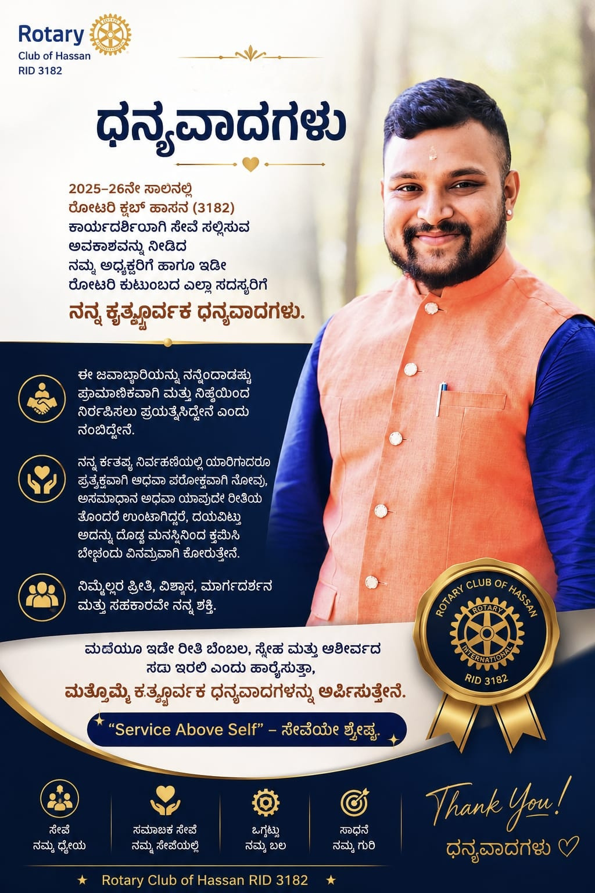

The team leading the Rotary Club of Hassan this Rotary year, the District leadership guiding RI District 3182, and the team that handed over the baton.

Led by President Rtn. Dr. Geetha Kiran A — the first lady president in the Club's history — and Secretary Rtn. Sunitha Somashekar, Team Aikyam embodies the Kannada concept of Aikyam (Unity). The team brings together diverse professionals to make a tangible, long-term impact on community health, education, literacy and civic infrastructure.
Team Aikyam was installed on 9 July 2026 at Nandagokula Convention Centre by Installation Officer PDG Rtn. Keshav H. R., and opened the year with a service project on 1 July — an RO water purifier for Karnataka State Open University, Hassan.


Professor & Dean (Corporate Affairs); CEO, ME-RIISE Foundation. The first lady president in the history of the Rotary Club of Hassan, leading Team Aikyam through the 2026–27 Rotary year.
“We make a living by what we get, but we make a life by what we give.”

Leading club administration and the 2026–27 service planning, and presenter of the club's action plan for the year.

Managing club finances, project budgets and contributions for the 2026–27 Rotary year.

Ensuring decorum, protocol and the smooth conduct of Team Aikyam's weekly meetings.
The Rotary Club of Hassan (Club No. 15716) serves under Zone 9 of Rotary International District 3182.

President of Rotary International, whose theme for the year is “Create Lasting Impact”.

District Governor of RI District 3182 for 2026–27; graced the Rotaract MCE installation in July.

Presented the vision and plans of District 3182 at the club's Installation Ceremony.

Zonal Lieutenant for Zone 9, RI District 3182, and Immediate Past President of the club.

MYTHRI — the club's monthly bulletin, carrying the reports and photographs of every month.
Read MYTHRI · July Edition (PDF)Responsibilities for the 2026–27 year were handed over by the outgoing team at the Installation Ceremony on 9 July 2026.
Immediate Past President, who handed over responsibilities to Team Aikyam and delivered the welcome address at the Installation Ceremony.

Presented the Secretary's report for the Rotary Year 2025–26 at the Installation Ceremony.

Managed the club's finances through the 2025–26 Rotary year.
Beyond the club, the Rotary Club of Hassan has produced six District Governors since 1975 — a tradition of nurturing leaders who serve Rotary well beyond Hassan. Their full story is part of the club's history.